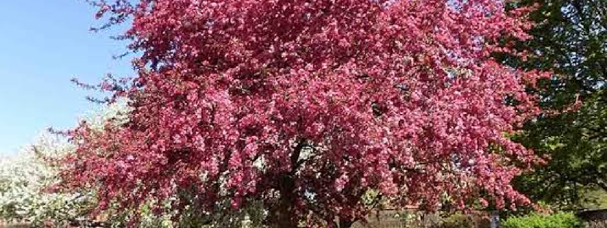

Итоги олимпиады по веб-разработке
5 мая 2025, 10:30
Так, на реке Хеу, притоке Черека, при помощи рейки и глазомера школьники измеряли характеристики моста и наносили его на топокарту; определяли азимут на Мекку; отгадывали разные горные породы Кавказа; смотрели, как добывают песок, гравий и гальку в долине Черека; рассказывали про способы земледелия и сельского хозяйства; мерили и классифицировали обломочные породы; по формуле состава минеральной воды рассчитывали ее водородный показатель и определяли тип источников.
Анастасия З., 11 класс, Москва:
